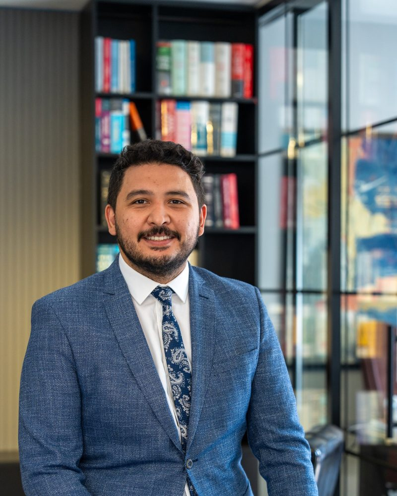

Av. İbrahim Kurban
Kurucu Avukat
İstanbul Şehir Üniversitesi Hukuk Fakültesi'nden mezun olmuş, Bahçeşehir Üniversitesi'nde Bilişim Hukuku alanında yüksek lisansını tamamlamıştır. Yedi yılı aşkın süredir ağırlıklı olarak ceza hukuku ve şirketler hukuku dosyalarında çalışmaktadır. Dosyalarını baştan sona müvekkilleriyle birebir iletişim içinde yürütür. Bilişim hukuku alanındaki akademik birikimi, bilişim suçları ve kişisel verilere ilişkin dosyalarda büroya ayrı bir bakış açısı kazandırmaktadır.
DillerTürkçe · İngilizce · Uygurca · Özbekçe